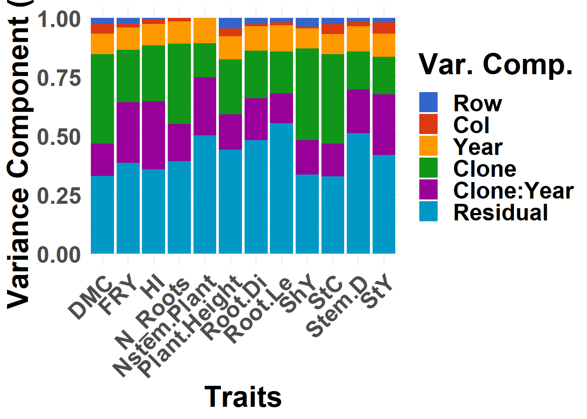

Last updated: 2023-10-27
Checks: 7 0
Knit directory:
Genomic-Selection-for-Drought-Tolerance-Using-Genome-Wide-SNPs-in-Casava/
This reproducible R Markdown analysis was created with workflowr (version 1.7.1). The Checks tab describes the reproducibility checks that were applied when the results were created. The Past versions tab lists the development history.
Great! Since the R Markdown file has been committed to the Git repository, you know the exact version of the code that produced these results.
Great job! The global environment was empty. Objects defined in the global environment can affect the analysis in your R Markdown file in unknown ways. For reproduciblity it’s best to always run the code in an empty environment.
The command set.seed(20221020) was run prior to running
the code in the R Markdown file. Setting a seed ensures that any results
that rely on randomness, e.g. subsampling or permutations, are
reproducible.
Great job! Recording the operating system, R version, and package versions is critical for reproducibility.
Nice! There were no cached chunks for this analysis, so you can be confident that you successfully produced the results during this run.
Great job! Using relative paths to the files within your workflowr project makes it easier to run your code on other machines.
Great! You are using Git for version control. Tracking code development and connecting the code version to the results is critical for reproducibility.
The results in this page were generated with repository version 02143bc. See the Past versions tab to see a history of the changes made to the R Markdown and HTML files.
Note that you need to be careful to ensure that all relevant files for
the analysis have been committed to Git prior to generating the results
(you can use wflow_publish or
wflow_git_commit). workflowr only checks the R Markdown
file, but you know if there are other scripts or data files that it
depends on. Below is the status of the Git repository when the results
were generated:
Ignored files:
Ignored: .Rhistory
Ignored: .Rproj.user/
Ignored: data/allchrAR08.txt
Untracked files:
Untracked: GETGV.RDS
Untracked: data/Article.docx
Untracked: data/Article2.docx
Untracked: data/Articles/
Untracked: output/BLUPS2.csv
Untracked: output/BLUPS3.csv
Untracked: output/BLUPS_drgBLUPs__boxplot_med.png
Untracked: output/BLUPS_drgBLUPs_density_med.png
Untracked: output/BLUPS_drgBLUPs_med.png
Untracked: output/BLUPS_par_mmer.Rdata
Untracked: output/Figuras_article.rar
Untracked: output/GD_matrix.csv
Untracked: output/GEBVS_G_BLUP_BGLR.RDS
Untracked: output/GEBVS_RR_BLUP.RDS
Untracked: output/GEBVxBLUPS.tiff
Untracked: output/GEBVxGETV.tiff
Untracked: output/GEBVxGETV2.tiff
Untracked: output/G_matrix.csv
Untracked: output/G_matrix.rds
Untracked: output/H2.csv
Untracked: output/Tabelas.xlsx
Untracked: output/accuracy_all_methods.tiff
Untracked: output/correlation_blups.tiff
Untracked: output/density_blups.tiff
Untracked: output/drgBLUP.csv
Untracked: output/indice_selection3.tiff
Untracked: output/kappa.tiff
Untracked: output/mean_pheno.csv
Untracked: output/result_mixed_model.RData
Untracked: output/result_mixed_model2.RData
Untracked: output/result_mixed_model3.RData
Untracked: output/result_sommer.RData
Untracked: output/results_cv_BayesA.csv
Untracked: output/results_cv_BayesB.csv
Untracked: output/results_cv_DOM.csv
Untracked: output/results_cv_GETGV.csv
Untracked: output/results_cv_G_BLUP.csv
Untracked: output/results_cv_G_BLUP2.csv
Untracked: output/results_cv_G_BLUP_BGRL.csv
Untracked: output/results_cv_G_BLUP_BLUPS2.csv
Untracked: output/results_cv_G_BLUP_BLUPS3.csv
Untracked: output/results_cv_G_BLUP_sommer.csv
Untracked: output/results_cv_RF.csv
Untracked: output/results_cv_RKHS.csv
Untracked: output/results_cv_RR_BLUP.csv
Untracked: output/results_kappa.csv
Untracked: output/results_kappa2.csv
Untracked: output/varcomp.tiff
Untracked: output/varcomp2.csv
Unstaged changes:
Deleted: data/Genomic Selection for Drought Tolerance Using Genome-Wide SNPs in Maize.pdf
Deleted: data/convet_haplo_diplo.txt
Deleted: output/BLUPS.RDS
Modified: output/BLUPS.csv
Deleted: output/BLUPS_Multi.csv
Modified: output/BLUPS_par.Rdata
Deleted: output/BLUPS_par_ind.Rdata
Deleted: output/H2_Multi.csv
Deleted: output/accuracy.png
Deleted: output/accuracy2.png
Deleted: output/accuracy_multi.png
Deleted: output/blups_med.png
Deleted: output/herdabilidade.csv
Modified: output/media_pheno.csv
Deleted: output/media_pheno_Multi.csv
Deleted: output/resultMM.Rdata
Deleted: output/result_G_BLUP.csv
Modified: output/results_cv.csv
Modified: output/varcomp.csv
Deleted: output/varcomp_multi.csv
Note that any generated files, e.g. HTML, png, CSS, etc., are not included in this status report because it is ok for generated content to have uncommitted changes.
These are the previous versions of the repository in which changes were
made to the R Markdown (analysis/phenotype.Rmd) and HTML
(docs/phenotype.html) files. If you’ve configured a remote
Git repository (see ?wflow_git_remote), click on the
hyperlinks in the table below to view the files as they were in that
past version.
| File | Version | Author | Date | Message |
|---|---|---|---|---|
| Rmd | 286b492 | Weverton Gomes | 2023-10-27 | Update Scripts and README |
| Rmd | 90dc112 | WevertonGomesCosta | 2022-11-17 | Update |
| Rmd | 6cc4d23 | WevertonGomesCosta | 2022-11-17 | Update |
| html | 6cc4d23 | WevertonGomesCosta | 2022-11-17 | Update |
| html | d930880 | WevertonGomesCosta | 2022-11-11 | Update |
| Rmd | 5988c27 | WevertonGomesCosta | 2022-11-11 | Update |
| html | 5988c27 | WevertonGomesCosta | 2022-11-11 | Update |
| Rmd | bf7b1d3 | WevertonGomesCosta | 2022-11-11 | Update |
| html | bf7b1d3 | WevertonGomesCosta | 2022-11-11 | Update |
Data and libraries
Load Libraries
library(kableExtra)
library(tidyverse)
require(ComplexHeatmap)
library(data.table)
library(readxl)
library(metan)
library(DataExplorer)
library(ggthemes)
library(GGally)
library(furrr)
library(future)
plan(multisession)
theme_set(theme_bw())Data import and manipulation
Let’s import the phenotypic dataset, excluding the traits without information and the traits Local (redundant with Year) and Treatment (only one observation).
pheno <- read_excel("data/Phenotyping.xlsx", na = "NA") %>%
select_if( ~ !all(is.na(.))) %>% # Deleting traits without information
select(-c("Local", "Tratamento"))We will perform some manipulations to adjust our database and to facilitate the visualization of the exploratory analysis.
First, let’s convert the traits that are character into factors. Then we will convert the traits that refer to the grades to integers and then into factors. After that, let’s create the trait ANo.Bloco for nesting in the model to obtain the BLUPs.
Exploratory Data Analysis
Introductory analysis of the entire dataset
introduce(pheno) %>%
t() %>%
kbl(escape = F, align = 'c') %>%
kable_classic(
"hover",
full_width = F,
position = "center",
fixed_thead = T
)| rows | 2336 |
| columns | 27 |
| discrete_columns | 3 |
| continuous_columns | 24 |
| all_missing_columns | 0 |
| total_missing_values | 16875 |
| complete_rows | 440 |
| total_observations | 63072 |
| memory_usage | 516592 |
We don’t have any columns that have all of the missing observations, but we do have a lot of missing values in every dataset. Some manipulations should be performed to improve the quality of the data.
Year Analysis
Let’s produce a heatmap to check the clone amount each year. I’m going to create another dataset with the Year and Clone count. Then I will create the objects corresponding to the clones and years array. Finally, I created the matrix that represents the presence and absence of the clone in the year.
pheno2 <- pheno %>%
count(Ano, Clone)
genmat <- model.matrix(~ -1 + Clone, data = pheno2)
envmat <- model.matrix(~ -1 + Ano, data = pheno2)
genenvmat <- t(envmat) %*% genmat
genenvmat_ch <- ifelse(genenvmat == 1, "Present", "Abscent")
Heatmap(
genenvmat_ch,
col = c("white", "tomato"),
show_column_names = F,
heatmap_legend_param = list(title = ""),
column_title = "Genotypes",
row_title = "Environments"
)
| Version | Author | Date |
|---|---|---|
| bf7b1d3 | WevertonGomesCosta | 2022-11-11 |
From the heatmap, it is clear that the year 2016 has very few observations. So, we must eliminate it.
Just for reference, let’s re-view the clone heatmap by year.
pheno2<- pheno %>%
count(Ano, Clone)
genmat = model.matrix( ~ -1 + Clone, data = pheno2)
envmat = model.matrix( ~ -1 + Ano, data = pheno2)
genenvmat = t(envmat) %*% genmat
genenvmat_ch = ifelse(genenvmat == 1, "Present", "Abscent")
Heatmap(
genenvmat_ch,
col = c("white", "tomato"),
show_column_names = F,
heatmap_legend_param = list(title = ""),
column_title = "Genotypes",
row_title = "Environments"
)
| Version | Author | Date |
|---|---|---|
| bf7b1d3 | WevertonGomesCosta | 2022-11-11 |
We can check how many clones we have in common between the years and also note that the years differ in the number of clones evaluated:
pheno2<- pheno %>%
count(Ano, Clone)
genmat = model.matrix( ~ -1 + Clone, data = pheno2)
envmat = model.matrix( ~ -1 + Ano, data = pheno2)
genenvmat = t(envmat) %*% genmat
genenvmat %*% t(genenvmat) %>%
kbl(escape = F,
align = 'c') %>%
kable_classic(
"hover",
full_width = F,
position = "center",
fixed_thead = T
)| Ano2017 | Ano2018 | Ano2019 | Ano2020 | |
|---|---|---|---|---|
| Ano2017 | 165 | 42 | 22 | 14 |
| Ano2018 | 42 | 138 | 39 | 16 |
| Ano2019 | 22 | 39 | 133 | 29 |
| Ano2020 | 14 | 16 | 29 | 138 |
The year 2020 has a lower number of clones in common, however, we will keep it for the analysis.
Here, it is possible to observe that our dataset has clones that were evaluated in just one year. Let’s visualize this, to see how many clones were evaluated according to the number of years.
pheno %>%
count(Ano, Clone) %>%
count(Clone) %>%
count(n) %>%
kbl(
escape = F,
align = 'c',
col.names = c("N of Environment", "N of genotypes")
) %>%
kable_classic(
"hover",
full_width = F,
position = "center",
fixed_thead = T
)Storing counts in `nn`, as `n` already present in input
ℹ Use `name = "new_name"` to pick a new name.| N of Environment | N of genotypes |
|---|---|
| 1 | 350 |
| 2 | 72 |
| 3 | 20 |
| 4 | 5 |
Only 5 clones were evaluated in all years, this will possibly decrease our model accuracy.
Another factor that reduces the accuracy, and therefore adopting mixed models via REML in the analysis is the most suitable for obtaining BLUPs.
Analysis of traits
Now, we will analyze the frequency for each discrete feature.

Mite Incidence and Flowering have little information for some levels and many NA’s, we will also exclude these traits.
Let’s just look at the missing values now, to check the proportions.

| Version | Author | Date |
|---|---|---|
| bf7b1d3 | WevertonGomesCosta | 2022-11-11 |
We have a high missing value ratio for Vigor, Leaf_Lenght, Canopy_Width and Canopy_Lenght, I’ll exclude those too.
Let’s check the distribution of traits by year now and let’s look at the histograms of the quantitative traits:

| Version | Author | Date |
|---|---|---|
| bf7b1d3 | WevertonGomesCosta | 2022-11-11 |
For Branching, Leaf.Ret, Mite, PltArc, Stand6MAP and Staygreen don’t have normal distribution. To get the BLUPs we will have to remove that traits from the database.
Analisys of Clone
First, let’s check the amount of missing values for each clone by year. We are filtering the Clones with the average bigger than 2 missing values by year.
pheno2 <- pheno %>%
select(-Bloco) %>%
group_by(Clone, Ano) %>%
summarise_all(.funs = list(~sum(is.na(.)))) %>%
ungroup() %>%
select_numeric_cols() %>%
mutate(mean = rowMeans(.),
Clone.Ano = unique(interaction(pheno$Clone, pheno$Ano))) %>%
filter(mean > 2) %>%
droplevels()
nlevels(pheno2$Clone.Ano) %>%
kbl(
escape = F,
align = 'c',
col.names = c("N of genotypes")
) %>%
kable_classic(
"hover",
full_width = F,
position = "center",
fixed_thead = T
)| N of genotypes |
|---|
| 54 |
54 clones presented many missing values, i.e., they were evaluated in less than two blocks by year. Therefore, they should be excluded from future analyses, according to the year.
Let’s evaluate the descriptive statistics of the combination between clone and year for the traits.
ge_details(pheno, Ano, Clone, resp = everything()) %>%
t() %>%
kbl(escape = F, align = 'c') %>%
kable_classic(
"hover",
full_width = F,
position = "center",
fixed_thead = T
)| Parameters | Mean | SE | SD | CV | Min | Max | MinENV | MaxENV | MinGEN | MaxGEN |
| N_Roots | 4.29 | 0.06 | 2.51 | 58.56 | 0.12 (BGM-1031 in 2017) | 15.67 (2012-107-002 in 2019) | 2018 (1.62) | 2019 (5.76) | BGM-0411 (0.33) | 2012-107-002 (11.33) |
| FRY | 4.95 | 0.09 | 4.04 | 81.79 | 0.12 (BGM-0886 in 2017) | 22.2 (BGM-1267 in 2018) | 2017 (2.75) | 2020 (6.52) | BGM-1488 (0.34) | IAC-14 (14.07) |
| ShY | 14.23 | 0.22 | 10.16 | 71.45 | 0.69 (BGM-0996 in 2017) | 61.17 (BGM-2124 in 2020) | 2017 (8.47) | 2020 (25.87) | BGM-0048 (1.52) | BGM-2124 (54.33) |
| DMC | 29.06 | 0.17 | 6.1 | 21 | 11.98 (BGM-0626 in 2020) | 48.34 (BGM-1015 in 2020) | 2020 (26.21) | 2018 (35.38) | BGM-0626 (14.98) | BGM-1015 (45.02) |
| StY | 1.52 | 0.04 | 1.27 | 84.01 | 0.02 (BGM-0340 in 2019) | 8.87 (BGM-0396 in 2018) | 2019 (1.32) | 2018 (1.84) | BGM-0089 (0.06) | BGM-1023 (4.76) |
| Plant.Height | 1.19 | 0.01 | 0.33 | 27.43 | 0.36 (BGM-0426 in 2020) | 3.03 (BR-11-24-156 in 2020) | 2017 (1) | 2019 (1.48) | Jatobá (0.58) | BGM-1200 (1.91) |
| HI | 24.56 | 0.27 | 11.89 | 48.42 | 1.57 (BGM-1159 in 2017) | 71.97 (BGM-1315 in 2018) | 2020 (18.61) | 2018 (32.36) | BGM-0961 (2.5) | Mata_Fome_Branca (52.78) |
| StC | 24.42 | 0.17 | 6.11 | 25.05 | 7.33 (BGM-0626 in 2020) | 43.69 (BGM-1015 in 2020) | 2020 (21.56) | 2018 (30.78) | BGM-0626 (10.33) | BGM-1015 (40.37) |
| Root.Le | 23.21 | 0.13 | 5.8 | 24.99 | 7 (BGM-1574 in 2017) | 47.33 (BGM-0396 in 2018) | 2017 (19.72) | 2019 (27.14) | Jatobá (8.5) | BGM-1956 (35.5) |
| Root.Di | 28.88 | 0.18 | 7.9 | 27.35 | 6.12 (BGM-2142 in 2019) | 63.3 (BRS Mulatinha in 2018) | 2017 (24.49) | 2018 (34.74) | BGM-0089 (12.14) | BGM-1956 (48.91) |
| Stem.D | 2.11 | 0.01 | 0.38 | 17.9 | 1.01 (BGM-0592 in 2018) | 4.37 (BRS Tapioqueira in 2020) | 2018 (2.02) | 2017 (2.16) | BGM-0048 (1.25) | BGM-1523 (2.93) |
| Nstem.Plant | 2.13 | 0.03 | 0.95 | 44.53 | 1 (BGM-0036 in 2018) | 6.67 (BGM-0714 in 2019) | 2018 (1.44) | 2019 (2.71) | BGM-0066 (1) | BGM-0451 (4.44) |
Apparently we no longer have a genotype that could harm our analysis. Now we must evaluate the clone-only descriptive statistics for the traits. Some traits presented hight cv, StY and FRY, but we will go continue.
desc_stat(pheno, by = Ano) %>%
kbl(escape = F, align = 'c') %>%
kable_classic(
"hover",
full_width = F,
position = "center",
fixed_thead = T
)| Ano | variable | cv | max | mean | median | min | sd.amo | se | ci.t | n.valid |
|---|---|---|---|---|---|---|---|---|---|---|
| 2017 | DMC | NA | -Inf | NaN | NA | Inf | 0.0000 | NA | NaN | 0 |
| 2017 | FRY | 66.8379 | 9.6700 | 2.7517 | 2.4310 | 0.1160 | 1.8392 | 0.0743 | 0.1459 | 613 |
| 2017 | HI | 48.2942 | 66.6827 | 23.5691 | 22.7255 | 1.5744 | 11.3825 | 0.4612 | 0.9058 | 609 |
| 2017 | N_Roots | 48.8708 | 12.0000 | 4.3530 | 4.3330 | 0.1250 | 2.1273 | 0.0860 | 0.1689 | 612 |
| 2017 | Nstem.Plant | NA | -Inf | NaN | NA | Inf | 0.0000 | NA | NaN | 0 |
| 2017 | Plant.Height | 21.0398 | 1.6767 | 1.0023 | 1.0000 | 0.4500 | 0.2109 | 0.0084 | 0.0165 | 632 |
| 2017 | Root.Di | 21.0039 | 39.6900 | 24.4889 | 24.4733 | 8.9867 | 5.1436 | 0.2077 | 0.4080 | 613 |
| 2017 | Root.Le | 21.5823 | 31.6667 | 19.7236 | 19.6667 | 7.0000 | 4.2568 | 0.1719 | 0.3376 | 613 |
| 2017 | ShY | 45.4973 | 22.2220 | 8.4677 | 8.0750 | 0.6940 | 3.8526 | 0.1542 | 0.3029 | 624 |
| 2017 | StC | NA | -Inf | NaN | NA | Inf | 0.0000 | NA | NaN | 0 |
| 2017 | StY | NA | -Inf | NaN | NA | Inf | 0.0000 | NA | NaN | 0 |
| 2017 | Stem.D | 16.7774 | 3.3333 | 2.1581 | 2.1667 | 1.2000 | 0.3621 | 0.0144 | 0.0284 | 629 |
| 2018 | DMC | 13.6086 | 46.0784 | 35.3819 | 36.0000 | 18.1818 | 4.8150 | 0.2785 | 0.5480 | 299 |
| 2018 | FRY | 86.0073 | 22.2000 | 5.6640 | 4.2500 | 0.3330 | 4.8714 | 0.2776 | 0.5462 | 308 |
| 2018 | HI | 41.5442 | 71.9673 | 32.3554 | 32.6094 | 5.8772 | 13.4418 | 0.7672 | 1.5096 | 307 |
| 2018 | N_Roots | 63.2913 | 6.2500 | 1.6249 | 1.4085 | 0.1900 | 1.0284 | 0.0588 | 0.1157 | 306 |
| 2018 | Nstem.Plant | 33.3849 | 3.3333 | 1.4397 | 1.3333 | 1.0000 | 0.4806 | 0.0248 | 0.0487 | 376 |
| 2018 | Plant.Height | 28.0409 | 1.9967 | 1.0953 | 1.0600 | 0.4867 | 0.3071 | 0.0159 | 0.0313 | 373 |
| 2018 | Root.Di | 23.3943 | 63.3033 | 34.7356 | 34.4400 | 14.1300 | 8.1262 | 0.4707 | 0.9264 | 298 |
| 2018 | Root.Le | 27.1625 | 47.3333 | 23.6102 | 23.0000 | 9.5000 | 6.4131 | 0.3715 | 0.7311 | 298 |
| 2018 | ShY | 69.0625 | 31.6000 | 8.7610 | 7.2000 | 1.0000 | 6.0506 | 0.3022 | 0.5940 | 401 |
| 2018 | StC | 15.6937 | 41.4284 | 30.7820 | 31.3500 | 13.5318 | 4.8309 | 0.2794 | 0.5498 | 299 |
| 2018 | StY | 91.8742 | 8.8669 | 1.8356 | 1.3539 | 0.0839 | 1.6864 | 0.0984 | 0.1936 | 294 |
| 2018 | Stem.D | 22.3941 | 3.7317 | 2.0158 | 1.9785 | 1.0133 | 0.4514 | 0.0234 | 0.0460 | 372 |
| 2019 | DMC | 13.8212 | 40.5941 | 28.2826 | 28.2828 | 15.3846 | 3.9090 | 0.1745 | 0.3428 | 502 |
| 2019 | FRY | 70.0326 | 22.2000 | 5.5039 | 4.6670 | 0.1430 | 3.8545 | 0.1712 | 0.3363 | 507 |
| 2019 | HI | 41.8572 | 60.1626 | 27.2545 | 27.3973 | 1.7258 | 11.4080 | 0.5066 | 0.9954 | 507 |
| 2019 | N_Roots | 47.2357 | 15.6670 | 5.7620 | 5.6670 | 0.3330 | 2.7217 | 0.1187 | 0.2331 | 526 |
| 2019 | Nstem.Plant | 37.3740 | 6.6667 | 2.7113 | 2.6667 | 1.0000 | 1.0133 | 0.0441 | 0.0867 | 527 |
| 2019 | Plant.Height | 19.1125 | 2.4233 | 1.4843 | 1.4633 | 0.7400 | 0.2837 | 0.0123 | 0.0243 | 528 |
| 2019 | Root.Di | 24.3155 | 58.9267 | 33.4940 | 33.6500 | 6.1200 | 8.1442 | 0.3596 | 0.7064 | 513 |
| 2019 | Root.Le | 21.1089 | 45.6667 | 27.1361 | 27.0000 | 11.0000 | 5.7281 | 0.2529 | 0.4969 | 513 |
| 2019 | ShY | 47.4901 | 47.5710 | 13.4607 | 12.7735 | 1.2860 | 6.3925 | 0.2782 | 0.5465 | 528 |
| 2019 | StC | 16.5407 | 35.9441 | 23.6326 | 23.6328 | 10.7346 | 3.9090 | 0.1745 | 0.3428 | 502 |
| 2019 | StY | 72.3243 | 5.4021 | 1.3238 | 1.1095 | 0.0154 | 0.9574 | 0.0428 | 0.0841 | 500 |
| 2019 | Stem.D | 15.7037 | 3.3203 | 2.1061 | 2.0963 | 1.1197 | 0.3307 | 0.0144 | 0.0283 | 528 |
| 2020 | DMC | 22.5059 | 48.3360 | 26.2094 | 26.0400 | 11.9760 | 5.8986 | 0.2569 | 0.5048 | 527 |
| 2020 | FRY | 68.4455 | 20.5670 | 6.5246 | 5.9000 | 0.4000 | 4.4658 | 0.1934 | 0.3800 | 533 |
| 2020 | HI | 43.3204 | 45.9340 | 18.6129 | 18.0486 | 1.9608 | 8.0632 | 0.3496 | 0.6867 | 532 |
| 2020 | N_Roots | 47.0839 | 10.3330 | 4.3060 | 4.3330 | 0.3330 | 2.0274 | 0.0881 | 0.1730 | 530 |
| 2020 | Nstem.Plant | 37.1507 | 4.6667 | 2.0463 | 2.0000 | 1.0000 | 0.7602 | 0.0326 | 0.0641 | 543 |
| 2020 | Plant.Height | 24.0927 | 3.0333 | 1.1945 | 1.1600 | 0.3600 | 0.2878 | 0.0124 | 0.0243 | 543 |
| 2020 | Root.Di | 20.5858 | 43.2733 | 26.2101 | 26.1800 | 11.8533 | 5.3956 | 0.2337 | 0.4591 | 533 |
| 2020 | Root.Le | 18.9730 | 36.6667 | 23.2345 | 23.3333 | 9.0000 | 4.4083 | 0.1909 | 0.3751 | 533 |
| 2020 | ShY | 42.7475 | 61.1670 | 25.8653 | 25.9165 | 3.3330 | 11.0568 | 0.4794 | 0.9417 | 532 |
| 2020 | StC | 27.3600 | 43.6860 | 21.5594 | 21.3900 | 7.3260 | 5.8986 | 0.2569 | 0.5048 | 527 |
| 2020 | StY | 81.2220 | 6.0724 | 1.5211 | 1.2326 | 0.0483 | 1.2354 | 0.0540 | 0.1060 | 524 |
| 2020 | Stem.D | 17.5042 | 4.3733 | 2.1321 | 2.1207 | 1.0547 | 0.3732 | 0.0160 | 0.0315 | 543 |
Again, some traits were not computed for the year 2017, so we have to eliminate that year when performing the analysis for these traits.
What draws attention in this table are the high cv for some traits, especially: HI, Nstem.Plant, N_Roots, ShY, StY and FRY.
This may be due to the presence of outliers, let’s inspect the entire dataset to assess whether there are outliers:
inspect(pheno %>%
select_if( ~ !is.factor(.)), verbose = FALSE, plot =T) %>%
kbl(escape = F, align = 'c') %>%
kable_classic(
"hover",
full_width = F,
position = "center",
fixed_thead = T
)| Variable | Class | Missing | Levels | Valid_n | Min | Median | Max | Outlier | Text |
|---|---|---|---|---|---|---|---|---|---|
| N_Roots | numeric | Yes |
|
1974 | 0.12 | 4.00 | 15.67 | 16 | NA |
| FRY | numeric | Yes |
|
1961 | 0.12 | 3.75 | 22.20 | 71 | NA |
| ShY | numeric | Yes |
|
2085 | 0.69 | 11.17 | 61.17 | 89 | NA |
| DMC | numeric | Yes |
|
1328 | 11.98 | 28.80 | 48.34 | 6 | NA |
| StY | numeric | Yes |
|
1318 | 0.02 | 1.21 | 8.87 | 49 | NA |
| Plant.Height | numeric | Yes |
|
2076 | 0.36 | 1.16 | 3.03 | 23 | NA |
| HI | numeric | Yes |
|
1955 | 1.57 | 23.35 | 71.97 | 15 | NA |
| StC | numeric | Yes |
|
1328 | 7.33 | 24.15 | 43.69 | 6 | NA |
| Root.Le | numeric | Yes |
|
1957 | 7.00 | 23.00 | 47.33 | 19 | NA |
| Root.Di | numeric | Yes |
|
1957 | 6.12 | 28.17 | 63.30 | 32 | NA |
| Stem.D | numeric | Yes |
|
2072 | 1.01 | 2.10 | 4.37 | 22 | NA |
| Nstem.Plant | numeric | Yes |
|
1446 | 1.00 | 2.00 | 6.67 | 30 | NA |
Confirming what was described before, most traits with high cv have many outliers and therefore we will exclude them in the loop to obtain the blups.
General Inspection
Now let’s just perform a general inspection of the data to finish the manipulations.

StC with DMC and StY with FRY show high correlation.
Furthermore most of the traits apparently show normal distribution of phenotypic data. So let’s save the clean data and move on to getting the blups.
Genotype-environment analysis by mixed-effect models
First, I’m going to create a function to get the blups and some parameters from our model.
BLUPS_par_mmer <- function(model, trait) {
# log likelihood of the model, AIC, convergence T/F
modelfit <- summary(model)$logo
# number of groups for factors, could be used to compute DF
groups <- summary(model)$groups
# variance components
varcomp <- summary(model)$varcomp
# variance components
Vg <- model$sigma$Clone %>% as.vector()
Ve <- model$sigma$units %>% as.vector()
# Narrow-sense heritability
H2_narrow <- Vg / (Vg + Ve)
# Broad-sense heritability
Va <- model$sigma$`Ano:Clone` %>% as.vector()
Ve <- model$sigma$units %>% as.vector()
n.ano <- length(model$U$Ano[[trait]])
H2_Broad<- (Vg) / (Vg + (Va/n.ano) + (Ve/(2*n.ano)))
# Extract the BLUPs and PEVs, compute Reliability (REL),
# de-regressed BLUPs and weights for downstream analysis
blups <- model$U$Clone %>%
unlist() %>%
tibble(Clone = names(.), BLUP = .) %>%
mutate(
Clone = gsub("Clone", "", Clone),
PEV = diag(as.matrix(model$PevU$Clone[[1]])),
# prediction error variance
REL = 1 - PEV / Vg,
# Reliability
drgBLUP = BLUP / REL,
# De-regressed BLUP
WT = (1 - H2_narrow) / ((0.1 + (1 - REL) / REL) * H2_narrow) # weight for downstream
)
# Combine all outputs into one object the function can return()
out <- list(
Trait = trait,
H2_Broad = H2_Broad,
H2_narrow=H2_narrow,
modelfit = list(modelfit),
groups = list(groups),
blups = list(blups),
varcomp = list(varcomp)
)
return(out)
}
save(BLUPS_par_mmer, file = "output/BLUPS_par_mmer.Rdata")The BLUP model
Here we have to remember that we have outliers for some traits and also that we must exclude the year 2017 for some.
Now let’s perform the mixed model analysis to get the BLUPs.
load("output/BLUPS_par_mmer.Rdata")
resultMM <- future_map(traits, function(i) {
data <- pheno %>%
select(1:3,all_of(i)) %>%
na.omit() %>%
droplevels()
model <- sommer::mmer(fixed = as.formula(paste(i, "~", "Ano:Bloco")),
random = ~ Clone + Ano + Ano:Clone,
rcov= ~ units,
data = data,
verbose = FALSE) # Clone:Ano and Ano.Bloco are random and Clone and Ano is fixed
result <- BLUPS_par_mmer(model, i)
}
)
names(resultMM) <- traits
save(resultMM, file = "output/result_sommer.RData")BLUPS for Clone
First, I will add the average of the traits with the BLUPs for better interpretation.
mean_pheno <- as.data.frame(pheno %>%
summarise_if(is.numeric, mean, na.rm = TRUE))
write.csv(mean_pheno, "output/mean_pheno.csv", row.names = F)As I used “future_map” to run each stage 1 analysis in parallel, each trait is in a separate element of a list. We need to process the resultMM object into a data.frame or matrix for further analysis.
BLUPS <- bind_rows(lapply(traits, function(i) {
data.frame(
trait = i,
Clone = str_split_i(resultMM[[i]][["blups"]][[1]][["Clone"]], pattern = "[.]", -1),
resultMM[[i]][["blups"]][[1]][-1],
BLUPS_mean = resultMM[[i]][["blups"]][[1]][["BLUP"]] + mean_pheno[, i],
drgBLUP_mean = resultMM[[i]][["blups"]][[1]][["drgBLUP"]] + mean_pheno[, i]
)
}))
H2 <- bind_rows(lapply(traits, function(i) {
data.frame(trait = i,
H2_Broad = resultMM[[i]][["H2_Broad"]],
H2_narrow = resultMM[[i]][["H2_narrow"]])
}))
varcomp <- bind_rows(lapply(traits, function(i) {
data.frame(
trait = i,
grp = c("Clone", "Ano", "Ano:Clone", "units"),
resultMM[[i]][["varcomp"]][[1]]
)
}))Saving the results of BLUPs and parameters
write.csv(BLUPS,
"output/BLUPS.csv",
row.names = F,
quote = F)
write.csv(H2,
"output/H2.csv",
row.names = F,
quote = F)
write.csv(varcomp,
"output/varcomp.csv",
row.names = F,
quote = F)Create a figure about de variance components
varcomp |>
ggplot(aes(x = trait, y = VarComp, fill = fct_reorder(grp, VarComp), by = trait)) +
geom_col(position = "fill")+
labs(y="Variance Component (%)",
x="Traits",
fill = "Var. Comp.")+
scale_fill_gdocs()+
theme_minimal()+
theme(text = element_text(size = 25, face = "bold"),
axis.text.x = element_text(
size = 20,
angle = 45,
hjust = 1,
vjust = 1
)) 
| Version | Author | Date |
|---|---|---|
| bf7b1d3 | WevertonGomesCosta | 2022-11-11 |
Ploting BLUPS for all traits
Let’s plot the density and boxplots figures of the traits.
BLUPS %>%
pivot_longer(8:9, names_to = "Method", values_to = "Values") %>%
ggplot(aes(x = Values, fill = Method)) +
geom_boxplot(alpha = 0.8) +
facet_wrap(trait~., ncol = 4, scales = "free") +
theme_bw() +
theme(text = element_text(size = 15)) +
scale_fill_gdocs() +
scale_color_gdocs() +
labs(x = "", y = "")
| Version | Author | Date |
|---|---|---|
| bf7b1d3 | WevertonGomesCosta | 2022-11-11 |
Here we will only evaluate the distribution of BLUPs without the mean.
BLUPS %>%
pivot_longer(8:9, names_to = "Method", values_to = "Values") %>%
ggplot(aes(x = Values, fill = Method, color = Method)) +
geom_density(alpha = 0.8) +
facet_wrap(trait~., ncol = 4, scales = "free") +
theme_bw() +
theme(text = element_text(size = 15)) +
scale_fill_gdocs() +
scale_color_gdocs() +
labs(x = "", y = "")
Apparently most BLUPs for the traits follow normal distribution and can be applied to GWS by conventional methods.
Then, now we go to execute the Genomic Wide Selection script: GWS.Rmd
R version 4.2.3 (2023-03-15 ucrt)
Platform: x86_64-w64-mingw32/x64 (64-bit)
Running under: Windows 10 x64 (build 19045)
Matrix products: default
locale:
[1] LC_COLLATE=Portuguese_Brazil.utf8 LC_CTYPE=Portuguese_Brazil.utf8
[3] LC_MONETARY=Portuguese_Brazil.utf8 LC_NUMERIC=C
[5] LC_TIME=Portuguese_Brazil.utf8
attached base packages:
[1] grid stats graphics grDevices utils datasets methods
[8] base
other attached packages:
[1] furrr_0.3.1 future_1.33.0 GGally_2.1.2
[4] ggthemes_4.2.4 DataExplorer_0.8.2 metan_1.18.0
[7] readxl_1.4.3 data.table_1.14.8 ComplexHeatmap_2.14.0
[10] lubridate_1.9.2 forcats_1.0.0 stringr_1.5.0
[13] dplyr_1.1.2 purrr_1.0.2 readr_2.1.4
[16] tidyr_1.3.0 tibble_3.2.1 ggplot2_3.4.3
[19] tidyverse_2.0.0 kableExtra_1.3.4
loaded via a namespace (and not attached):
[1] minqa_1.2.6 colorspace_2.1-0 rjson_0.2.21
[4] rprojroot_2.0.3 circlize_0.4.15 GlobalOptions_0.1.2
[7] fs_1.6.3 clue_0.3-65 rstudioapi_0.15.0
[10] listenv_0.9.0 farver_2.1.1 ggrepel_0.9.3
[13] fansi_1.0.4 mathjaxr_1.6-0 xml2_1.3.5
[16] codetools_0.2-19 splines_4.2.3 doParallel_1.0.17
[19] cachem_1.0.8 knitr_1.44 polyclip_1.10-4
[22] jsonlite_1.8.7 workflowr_1.7.1 nloptr_2.0.3
[25] cluster_2.1.4 png_0.1-8 ggforce_0.4.1
[28] compiler_4.2.3 httr_1.4.7 Matrix_1.6-1
[31] fastmap_1.1.1 cli_3.6.1 later_1.3.1
[34] tweenr_2.0.2 htmltools_0.5.6 tools_4.2.3
[37] lmerTest_3.1-3 igraph_1.5.1 gtable_0.3.4
[40] glue_1.6.2 Rcpp_1.0.11 cellranger_1.1.0
[43] jquerylib_0.1.4 vctrs_0.6.3 svglite_2.1.1
[46] nlme_3.1-163 iterators_1.0.14 xfun_0.40
[49] globals_0.16.2 networkD3_0.4 lme4_1.1-34
[52] rvest_1.0.3 timechange_0.2.0 lifecycle_1.0.3
[55] MASS_7.3-58.2 scales_1.2.1 ragg_1.2.6
[58] hms_1.1.3 promises_1.2.1 parallel_4.2.3
[61] RColorBrewer_1.1-3 yaml_2.3.7 gridExtra_2.3
[64] sass_0.4.7 reshape_0.8.9 stringi_1.7.12
[67] S4Vectors_0.36.2 foreach_1.5.2 BiocGenerics_0.44.0
[70] boot_1.3-28.1 shape_1.4.6 rlang_1.1.1
[73] pkgconfig_2.0.3 systemfonts_1.0.4 matrixStats_1.0.0
[76] evaluate_0.22 lattice_0.21-8 labeling_0.4.3
[79] patchwork_1.1.3 htmlwidgets_1.6.2 tidyselect_1.2.0
[82] parallelly_1.36.0 plyr_1.8.8 magrittr_2.0.3
[85] R6_2.5.1 IRanges_2.32.0 generics_0.1.3
[88] mgcv_1.9-0 pillar_1.9.0 whisker_0.4.1
[91] withr_2.5.1 crayon_1.5.2 utf8_1.2.3
[94] tzdb_0.4.0 rmarkdown_2.25 GetoptLong_1.0.5
[97] git2r_0.32.0 digest_0.6.33 webshot_0.5.5
[100] httpuv_1.6.11 numDeriv_2016.8-1.1 textshaping_0.3.7
[103] stats4_4.2.3 munsell_0.5.0 viridisLite_0.4.2
[106] bslib_0.5.1 Weverton Gomes da Costa, Pós-Doutorando, Embrapa Mandioca e Fruticultura, wevertonufv@gmail.com↩︎